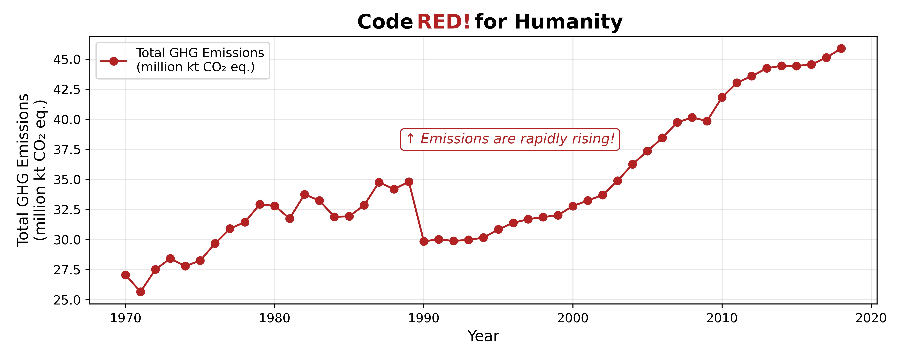
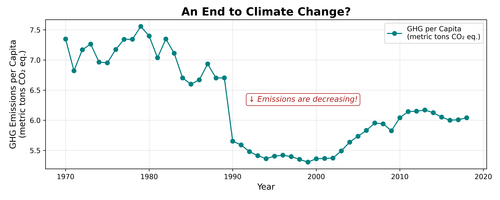

Proposition: Global greenhouse gas (GHG) emissions have been rising rapidly in recent decades.
FOR the Proposition

Design Decisions and Rationale:
- Metric used: Total GHG Emissions (-1.5)
To show a relationship between population and emissions, I plotted Year on the x-axis because we know that the global population grows as time passes. As for the y-axis, since total emissions are heavily influenced by population growth, choosing this instead of GHG emissions per capita inflates the perceived severity. - Y-axis truncation (-2)
The y-axis starts at around 25M instead of 0, which makes the upward slope steeper, hence making the growth seem sharper. In the dataset I used, there was information about different types of gas emissions, which could have also been used to support the proposition, but I found that the one I used for my plot gave the best shape to support my proposition and make it more persuasive. - Text Box Annotation (-1)
The text box was placed in the center of the plot to make it more visible and eye-catching to the reader. I decided to put a short phrase instead of a longer one to keep my visualization neat, while still being able to convey the general message of the plot. Moreover, the text is meant to reinforce the visual exaggerations by using emotional phrasing and an arrow pointing up. - Color Choice: Red (-0.5)
I chose a bold red color for the line plot to imply urgency or “danger.” - Title (-0.5)
The title has a bolded font, making it more eye-catching, the word “red” is fully capitalized, colored in red, and it has an exclamation mark. These elements work together to help signal urgency.
AGAINST the Proposition

Design Decisions and Rationale:
- Metric Used: GHG per Capita (-1.5)
By dividing total GHG emissions by population, the plot shifts focus away from the absolute scale of climate impact and instead centers on individual contribution. This visually flattens what might otherwise be a steep rise in emissions due to global population growth. Using it here minimizes the perception of urgency, implying that on an individual basis, emissions haven’t drastically changed, even though overall emissions have increased significantly. - Scaling of Y-Axis (-2)
The y-axis range is narrow, spanning only a 2.3-ton window, which compresses visual changes, making fluctuations seem minimal. As a result, the viewer perceives a stable trend line with relatively minor dips or rises, reinforcing the idea that not much has changed, which is meant to be deceiving, as viewers tend to infer significance from slope steepness and visual movement. - Text Box Annotation (-1)
The text box was placed in the center of the plot to make it more visible and eye-catching to the reader. I decided to put a short phrase instead of a longer one to keep my visualization neat, while still being able to convey the general message of the plot. Moreover, the text is meant to reinforce the visual exaggerations by using emotional phrasing and an arrow pointing down. - Color Choice: Teal (-0.5)
I chose a cool teal tone for the line plot to subtly communicate a sense of “calmness.” - Title (-0.5)
I phrased the title as a question to add ambiguity and drama.
Final Reflection
Starting out, I was overwhelmed by the number of datasets available on the course website. I wanted to find one with interesting information while also thinking of ways to visualize it, but it didn’t take long to realize that reviewing the datasets one by one would be very time-consuming and tedious. I decided to narrow my search to environmental-themed datasets. Fortunately, I came across a dataset from the World Bank focused on climate change. At first glance, I noticed that many columns had numerous missing (NaN) values. I thought to myself: if a large portion of a column is missing, and I try to plot it against another variable to examine their relationship, the resulting plots would be biased and unreliable. So, before familiarizing myself with the data, I filtered out columns where more than 40% of the values were missing. Then, with the remaining columns, I slowly began formulating my proposition.
After spending some time understanding the structure of the dataset, I decided to examine the trend in greenhouse gas (GHG) emissions, as it felt highly relevant today. I chose a line plot because it’s simple, intuitive, and easier to manipulate in a persuasive way—allowing one version of the plot to trend upward and another to trend downward. One challenge was selecting the right variables to best support each side of my proposition. I had to play around with the available data to test which combinations produced the most persuasive visual effects. Once I found the best match, I implemented subtle deceptive techniques introduced in lectures—like adjusting the y-axis scale or choosing different metrics—to highlight or downplay emission trends.
After completing this project, I was surprised by how easily viewer perception could be influenced by simple tweaks in axes, color, or phrasing. It made me realize how vigilant I need to be when evaluating data visualizations to avoid falling into visual “traps.” This project taught me that ethical visualization is about balancing clarity, truthfulness, and emotional influence. Persuasive visualizations become misleading when they selectively emphasize certain aspects while obscuring others—especially without proper context. I consider “acceptable” persuasive choices to be those that clarify and focus interpretation without hiding key facts, while “misleading” ones exploit ambiguity or exaggerate/understate a message. In conclusion, just because a visualization is based on real data doesn’t mean it’s always conveying the whole truth.